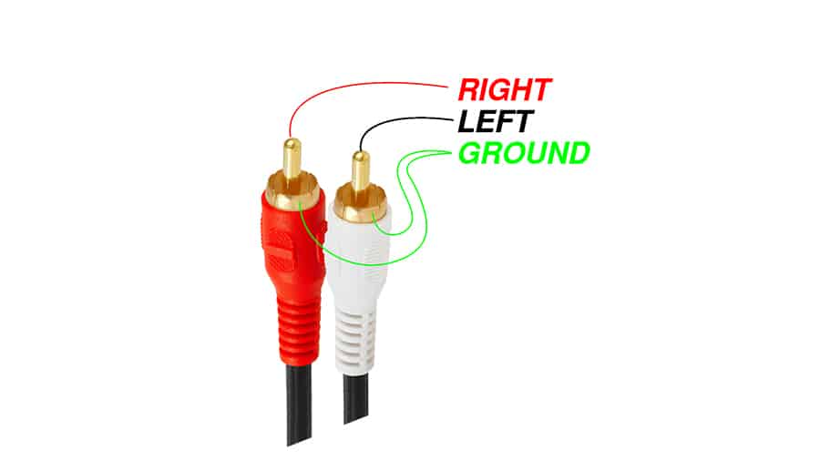
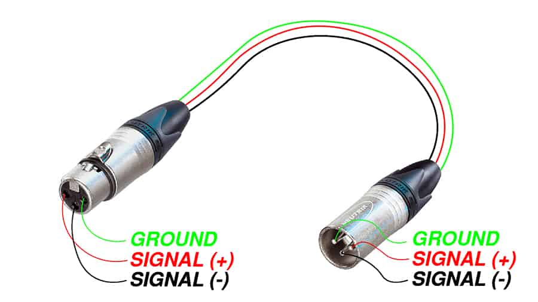
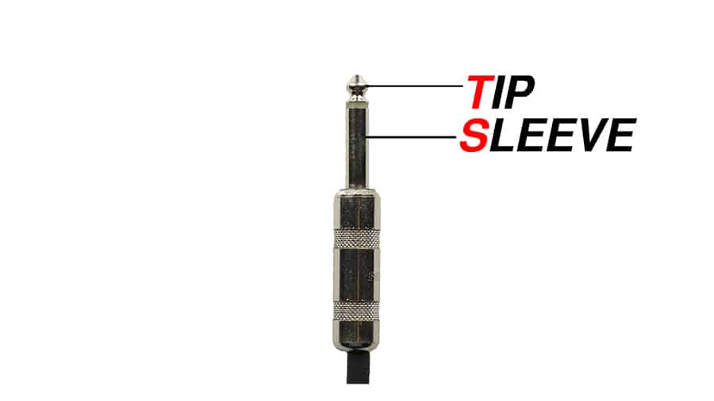
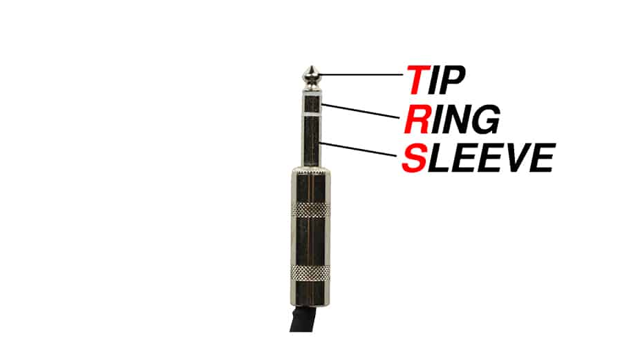
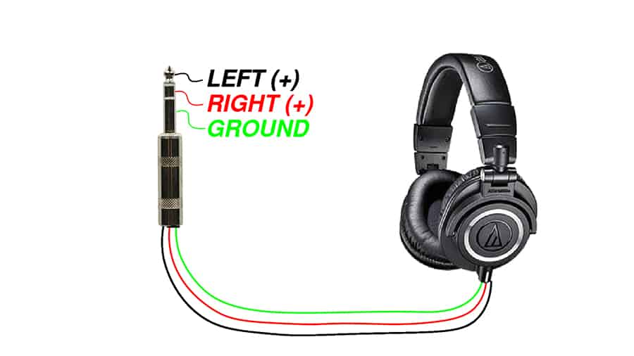
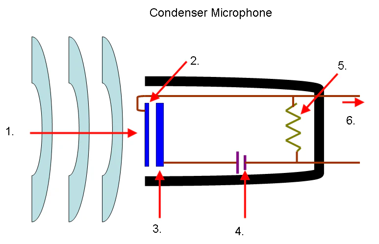
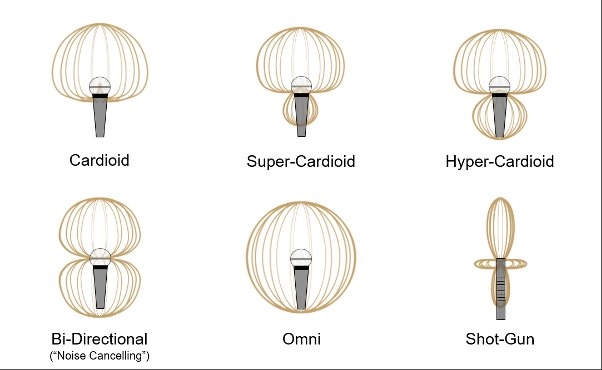

Last week we walked the basic recording chain: a dynamic mic, an XLR cable, an audio interface, a computer. That chain works because every stage matches the one before it. This reading widens the frame to the other signal types, cables, and mics you'll meet in the wild, plus two small boxes that exist to make incompatible stages fit together: the DI box and the hardware preamp.
Take from the lab's gear storage: audio interface, headphones. Plug in and run through the start-of-session steps on the Session Routines card before continuing here.
The first thing that changes when you swap one source for another is the strength of the electrical signal coming out of it. A dynamic microphone produces a tiny voltage. An electric guitar produces a stronger one. A synthesizer produces a stronger one still. These are three different signal levels, and the names for them are mic level, instrument level, and line level.
The reason this matters is that every input on every piece of audio gear is designed for one signal level. An input designed for mic level expects a tiny signal and amplifies it heavily. Plug a line-level signal into that input and the amplification overloads, distorts, and clips. Plug a mic-level signal into a line input and the signal is so far below what the input expects that it disappears into the noise floor. The levels have to match.
The numbers above are estimates. Mic level is around a millivolt (one one-thousandth of a volt), instrument level is around a hundred millivolts, and line level is around a volt. The exact figures depend on the source, but the gap between them is the point: a line-level signal is roughly a thousand times stronger than a mic-level signal. That's a big enough gap that the input circuits handling each level have to be built differently.
What comes out of any microphone. The signal is weak because the energy producing it (sound waves vibrating a diaphragm) is small. A mic-level signal has to be amplified by a preamp before it can be used or recorded. Every audio interface has built-in preamps on its mic inputs. The XLR jack on the front of the PreSonus or the Behringer is a mic input, and turning the gain knob is what controls how much that preamp amplifies the signal. Preamps come in all shapes and sizes, not just built into an audio interface: a mixer's channel strip has one on each input, and a standalone hardware preamp is one in a box of its own. We'll come back to those in section 5.
What comes out of an electric guitar or bass pickup. A pickup is a small coil of wire wound around a magnet; the steel strings vibrate inside the magnetic field and induce a current in the coil. That mechanism produces a signal that's stronger than a mic puts out but weaker than a typical line-level source. An instrument-level signal also has high impedance, which is an electrical property that affects how the signal travels through a cable and what kind of input it wants. A high-impedance signal plugged into a low-impedance input (like a line input) loses its high frequencies and sounds dull.
"Instrument level" sounds like it covers all instruments, but it really means "what comes out of a pickup." Electric guitars and electric basses have pickups built into them by default, so they produce instrument-level signals directly. Most other instruments don't. An acoustic guitar, a violin, a saxophone, a piano, your own voice: none of them produce any electrical signal on their own, so they have no signal level to speak of. To capture them you put a mic in front, which gives you mic level.
You can add a pickup to almost any acoustic instrument, though, and that's a common move. Aftermarket pickups exist for acoustic guitar, violin, upright bass, mandolin, even brass and wind instruments. Once installed, the instrument now has two ways of producing sound: the acoustic one (capturable with a mic, mic level) and the electrified one (capturable with a cable from the pickup, instrument level). Players often record both at once and blend them.
Most audio interfaces have a dedicated instrument input for this reason, often marked Hi-Z (for "high impedance") or labeled with a little guitar icon. The lab interfaces handle it two different ways. The PreSonus AudioBox USB 96 has two combo jacks on the front, both labeled Mic/Inst: each one accepts either a mic-level or an instrument-level signal, and the gain knob for that channel has Inst and Mic markings around it to guide where the level typically sits. The Behringer U-Phoria UM2 takes a simpler approach: input 1 is a combo jack labeled Mic/Line 1 (mic or line, no instrument), and input 2 is a dedicated 1/4" jack labeled Inst 2 for instruments only. Same job, two different layouts.
What comes out of a synthesizer, a mixer's main outputs, a CD player's outputs, an audio interface's outputs, or any device whose job is to send audio onward to another device. Line level is the standard interchange format of professional audio: every piece of audio gear with outputs sends at line level, and every piece with inputs designed to receive from other gear expects line level.
A line input doesn't need much amplification, because the signal is already strong. The preamp behind a line input applies far less gain than the one behind a mic input. The lab interfaces don't have dedicated line inputs, but they can accept a line-level signal on the 1/4" side of a combo jack (the Behringer is explicit about it, with its input 1 labeled Mic/Line 1). Larger interfaces with more channels often dedicate certain inputs to line level only.
There are two flavors of line level worth knowing about. Consumer line level (called -10 dBV, the spec a CD player or a typical home stereo uses) sits at around 0.3 volts. Professional line level (called +4 dBu, used in studio gear and pro mixers) sits at around 1.2 volts, four times stronger. Plug a consumer-line source into a pro-line input and the signal is quieter than the input expects; plug a pro-line source into a consumer-line input and the signal is too hot. The lab interfaces handle both, but mismatched line levels are a common source of "why is this signal so quiet" (or so loud) in mixed-gear setups.

Each signal level has a cable type that conventionally carries it. The cable carries the signal between devices, but it also tells you something about what kind of signal to expect: a cable type is a strong hint about what's flowing through it.
The XLR cable from Lecture 1 carries mic-level signals from microphones to interface inputs. Three pins, three conductors inside, balanced: two opposite-polarity copies of the signal and a ground. The balanced design lets the receiving end cancel out any electromagnetic noise picked up along the cable's run, which is why XLR works well for the weak mic-level signals where any added noise would be obvious.
XLRs can also carry balanced line-level signals between professional audio gear. The cable is the same, but the signal level is different. The output of a studio preamp going into the input of a mixing console travels over XLR at line level. The output of a microphone going into the input of an interface travels over XLR at mic level. Same cable, different signal, decided by what's plugged in at each end.
A cable is passive: three wires and a shield, no electronics inside. It doesn't know or care what level of signal is traveling through it. Whatever voltage the device at one end puts onto the wires, the device at the other end sees. A mic-level signal (a millivolt or so) and a line-level signal (a volt or so) are both just voltages swinging up and down, and the cable carries them the same way.
What "decides" the level is the gear at each end. A microphone produces mic level because that's what its transducer puts out. A studio preamp produces line level because that's what its output circuit is designed for. The cable is just the path between them. The same logic explains why the balanced noise-rejection trick works for either level: it depends on the cable's two-wire layout, not on how strong the signal is.

A TS cable ends in a quarter-inch plug with two metal sections separated by a single insulating ring: the tip (T) and the sleeve (S). Inside the cable there are two conductors: one for the signal, one for the ground and shield. This is the standard guitar cable, the kind that plugs a guitar into an amplifier or into the Hi-Z input on an audio interface.

TS is unbalanced. There's only one copy of the signal traveling down the cable, with the ground returning the current. The balanced-cable trick from Lecture 1 (two opposite-polarity copies, summed at the far end so noise cancels) can't happen here because there's only one copy. Any electromagnetic noise the cable picks up along its run goes straight into the signal. This is why guitar cables work best when they're short, and why running a 50-foot guitar cable across a room full of stage lights produces a noticeable hum.
The good news: instrument-level signals are strong enough (around 100 millivolts) that a little picked-up noise stays small relative to the signal. The noise floor of an unbalanced cable carrying an instrument-level signal is usually fine (and the typical TS run is much shorter than a typical XLR run anyway, so there's less cable on which to pick up noise in the first place). The same cable carrying a mic-level signal would have an unacceptable signal-to-noise ratio, which is part of why mics use balanced XLR.
A TRS cable ends in a quarter-inch plug that looks like a TS plug with one extra ring: the tip (T), ring (R), and sleeve (S). Three sections, three conductors inside. That third conductor opens up two different uses depending on what the gear at each end expects.

Used balanced, the three conductors carry the same noise-rejection trick as an XLR: signal, inverted signal, ground. At the receiving end, the inverted copy is flipped and summed with the original; noise picked up along the cable cancels. This is how a TRS cable carries balanced line-level signals between professional gear. The PreSonus AudioBox's Main Out jacks are TRS for exactly this reason: balanced line-level output to studio monitors. (Take a look at the back of the lab's PreSonus and you'll see them.)
Used unbalanced, the three conductors carry a stereo signal: left, right, and ground. This is how headphones work. A pair of headphones has two speakers (one for each ear), each needing its own signal, plus a shared ground. The TRS plug at the end of a headphone cable carries left on the tip, right on the ring, and ground on the sleeve.

Same physical cable, two different jobs. Which one is happening depends entirely on what's plugged in at each end. A TRS cable between a mixer's balanced output and a studio monitor's balanced input is carrying balanced mono. A TRS cable between an interface's headphone jack and a pair of headphones is carrying unbalanced stereo. The gear decides.
You can plug a TS cable into a TRS jack and it will mostly work, because the TS plug shorts the ring to the sleeve. The connection becomes unbalanced (no noise rejection), but the signal flows. Plug a TRS cable into a TS jack and the same thing happens in reverse. This is why you can grab almost any quarter-inch cable in the lab and get audio out of it. What you can't do is plug an XLR cable into a quarter-inch jack, or vice versa: the connector shapes are physically incompatible.
The mics in the lab are dynamics. They're the workhorses of the course, the right choice for the paper recordings and most everyday sample-library work. As you move outside the lab, you'll meet two other transducer types that show up in any studio inventory: the condenser and (less often) the ribbon. Both are still microphones doing the same fundamental job (converting acoustic energy into electrical energy), but the mechanism inside is different, and the different mechanism produces a different sound.
Inside a condenser mic, instead of a coil-and-magnet assembly, there are two thin metal plates held very close together, with one of them free to move. Sound waves push the movable plate back and forth, changing the distance between the two plates. The mic measures that changing distance as a changing electrical capacitance, and turns it into an output signal. The full electrical principle isn't important here; what matters is the consequence.

Because the movable plate has no coil attached to it, it's far lighter than a dynamic mic's diaphragm. A lighter plate responds more readily to quiet sounds and to fast detail (the high-frequency transients in a hi-hat hit, the breath at the start of a sung consonant, the air around a soft acoustic guitar). Condensers capture those details with a clarity that dynamics smooth over. This is why condensers are the standard studio mic for vocals, acoustic guitar, piano, drum overheads, and anything where you want the recording to feel detailed and present.
The trade-off is that the condenser's two-plate design needs a small electrical charge across the plates to work at all. Where does that charge come from? An audio interface (or a mixer, or a dedicated mic preamp) can send a small DC voltage up the same XLR cable that carries the audio signal back down. This is called phantom power, conventionally +48 volts, and it's the reason every interface with a mic input has a button or switch labeled +48V. Turn it on when you plug in a condenser; turn it off when you plug in a dynamic.
A common worry: will phantom power damage a dynamic mic if you forget to switch it off? For modern dynamic mics with balanced XLR outputs, the answer is no. The +48V appears equally on both signal pins, and the mic's circuit ignores it. Older or unusual designs (some ribbon mics in particular) can be damaged, which is why the convention is to switch phantom power off when you're not using a condenser. The rule of thumb: phantom power on only when you know the mic needs it.
A ribbon mic uses a thin strip of corrugated metal foil suspended in a magnetic field. Sound waves move the ribbon back and forth, which generates a small current the same way a dynamic mic's coil does. The ribbon is much lighter than a coil, so it captures detail more like a condenser; but it has no plates, so it doesn't need phantom power (and can be damaged by it on some older designs).
Ribbons have a warm, smooth, slightly darker character that engineers reach for on certain sources: brass instruments, guitar amplifiers, voiceover work. They're also fragile: a strong blast of air (a kick drum up close, someone speaking into the mic from a few inches away, a careless drop) can stretch the ribbon and ruin the mic. You won't use ribbons in this course, but they're worth knowing as the third common transducer type so the vocabulary is complete.
For the work you'll do in Module 3, the dynamic mic at the station is the right tool. It's rugged, it handles your paper recordings without complaint, it doesn't need phantom power, and its character flatters the kinds of source material the project asks for. The reason to know about condensers and ribbons is partly so you can read studio specs and gear lists without getting lost, and partly so that when you eventually do reach for a different mic (in Sound Design, in a band recording, in a podcast setup), you'll know what kind of signal each type produces and what each one wants from its input chain.
The dynamic mics in the lab are cardioid: most sensitive in front, less sensitive at the sides, almost deaf to sound coming from directly behind. That's one polar pattern. Many microphones, especially condensers, can switch between several patterns. Three are common enough to know by name: cardioid, omnidirectional, and figure-8 (sometimes called bi-directional). A handful of other patterns show up as variants of these three.

Cardioid rejects what's behind it and emphasizes what's in front. The dominant pattern for live work, where you want the mic to pick up the source and not the room (or the monitor speaker pointed at the performer). The pattern most dynamic mics are stuck with, and the pattern most condensers default to.
Omnidirectional picks up equally from every direction. A sphere around the mic. The mic doesn't favor any one direction over another; it captures the whole space around it. Useful when you want the room to be part of the recording (an orchestra at a respectful distance, a piano in a hall, an ambience track for a sound design library) or when the source moves around (a conversation between two people across a table, where pointing the mic at one of them would lose the other).
Figure-8 (also called bi-directional) picks up equally from front and back, but rejects sound from the sides. Two equal lobes. Useful for capturing two sources facing each other across a mic (a duet, an interview), or for stereo mic'ing techniques that combine a cardioid and a figure-8 to capture a wide image of a single source.
The other three patterns in the chart are variants. Super-cardioid and hyper-cardioid are tighter, more directional versions of cardioid that trade a little rejection at the back for tighter focus at the front; they're common on stage mics that need extra isolation. Shotgun is the most directional of all, a narrow forward lobe that's standard in film and television production for picking up dialogue from a distance. You'll meet them mostly in specialized contexts.
Most condensers labeled "multi-pattern" let you switch between cardioid, omni, and figure-8 (and sometimes a few intermediate ones) using a small switch on the mic body. The polar-pattern choice is a creative decision about what to include and what to exclude. It belongs to the same family of decisions as choosing the mic itself or choosing where to place it.
By now you've seen that an input wants a specific signal level and an input shape (mic, instrument, line). What happens when the source you have and the input you have don't match? You insert a signal modifier: a small box that takes a signal at one level and outputs it at another. Two of these modifiers are common enough to know by name: the DI box and the hardware preamp.
"DI" stands for direct injection, or sometimes just direct input. A DI box takes an unbalanced instrument-level signal (the kind that comes out of a guitar) and outputs a balanced mic-level signal (the kind a mic input expects). It does two jobs at once: it lowers the signal level, and it converts unbalanced to balanced.
The use case: imagine a band playing live in a venue with a long stage. The guitarist's amp is at the back of the stage; the mixing console is at the back of the venue, fifty feet away. The guitarist wants to send a signal from their guitar (or from a pedal output) all the way to the mixer. Running a TS cable that distance would be a noise disaster: an unbalanced cable that long picks up enough electromagnetic interference to drown the signal. The solution: plug the guitar into a DI box at the stage end, run a long XLR cable from the DI's output to the mixer, and let the balanced cable reject the noise along the way. At the mixer, the signal enters a mic input as if it had come from a microphone.
The studio use case is similar. If you want to record a bass guitar directly into a mic input on a mixer that has no instrument-level inputs of its own, plug the bass into a DI, plug the DI into the mic input, and you've matched the signal to what the input wants. Many DI boxes are passive (no power needed, the level change comes from a transformer inside) and some are active (powered, often by phantom power from the mic input it feeds, with extra circuitry that handles the impedance change more gracefully).
A preamp takes a mic-level signal and amplifies it to line level. You already know that audio interfaces have built-in preamps on their mic inputs (that's what the gain knob controls). A hardware preamp is the same circuit, but as a standalone box rather than part of an interface, often built with specific design choices that give the amplification a distinctive sound. Two kinds of distinctiveness show up.
The first is technical: a high-quality outboard preamp can be quieter (lower self-noise) and more transparent than the budget preamps in a $100 audio interface. For very quiet sources recorded with sensitive condenser mics, the difference can be audible.
The second is character. Some preamp designs deliberately add a coloration to the signal as they amplify it: a slight harmonic distortion that engineers describe as warmth, punch, saturation, or thickness. The Neve 1073 (a preamp originally designed in the 1970s for British studio consoles) and the API 312 (designed in the same era for American consoles) are two famously characterful preamps. Engineers reach for them not because they amplify more accurately than a clean preamp does, but because they amplify less accurately in a way that flatters certain sources. You'll hear people talk about "the Neve sound" or "the API sound"; that's what they mean.
For everything you'll do in this course, the preamps built into the lab's interfaces are clean, quiet, and more than enough. Hardware preamps are worth understanding so the vocabulary makes sense when you encounter it later. The studio world has a deep culture of preamp choice, and "what preamp did you track this on?" is a real question with real audible consequences.
With these pieces in hand, the basic recording chain from Lecture 1 can adapt to almost any source. The diagram below shows three flows side by side: a mic recording (the basic chain you already know), a guitar recording through the interface's instrument input (no DI needed), and a guitar recording through a DI box into a mic input (the situation that arises when the gear at hand doesn't have an instrument input). All three end at the same place (an audio interface, then a computer); they differ in how the signal gets there.
What the diagram makes visible: the chain is a sequence of matching steps. At every boundary between two devices, the signal level on the cable matches the input expecting it. When a source produces a signal at the wrong level for the input you have, a signal modifier closes the gap. The DI box is one specific case (instrument level becomes balanced mic level); a hardware preamp is another (mic level becomes line level). Both are tools for making the chain fit together when it otherwise wouldn't.
Once you can recognize the pattern, you can reason about any setup you encounter. A synth into a mixer's line input: line out, line in, levels match, done. A guitar into a mic input: levels don't match, need a DI between them. A condenser mic into an interface: mic level on XLR, interface preamp does the amplification, but the mic needs phantom power so the +48V button has to be on. Once the boundaries are named, the setup becomes a series of small, checkable decisions.
Optional, for the curious. None of this is required.
Before leaving the station, run the end-of-session routine on the Session Routines card. NAS upload first, gear teardown second.